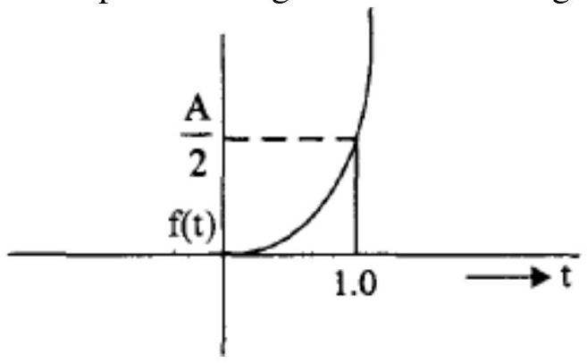

Unit-1: Fundamental of Control System
A Control System is a system in which the output is controlled by varying the input. Here a desired response by controlling the output.
Open loop control system
An open-loop control system is a system in which the control action is independent of the desired output signal. In this system, the output signal is not compared with the input signal which means there is no feedback signal in this system. The open-loop control system is also known as a non-feedback control system or control system without feedback.
Controller -> Actuating Signal -> Plant -> Output." class="content-image">Closed loop control system
A closed loop control system is a system in which control action is dependent on the desired output. In this system, the output signal is compared with the reference input signal, and an error signal is produced then this error signal is fed to the controller to reduce the error to obtain the desired output.
Error Detector (summing junction with feedback) -> Controller -> Actuating Signal -> Plant -> Output, with Feedback Elements returning signal from Output to Error Detector." class="content-image">Linear and Non-linear system
Linear system: A system is known as linear if and only if it possesses both homogeneity and superposition properties. Superposition implies that an input $r_{1}(t)$ gives an output $c_{1}(t)$ and another input $r_{2}(t)$ gives the output $c_{2}(t)$. If two inputs are applied together then the output will be the sum of two outputs:
If our input-output relationship is a straight line passing through the origin, then the system obeys the superposition property. The straight line passing through origin means that the output is zero (0) for zero (0) input.
If the input increases for any system K time from $r_{1}(t)$ to $Kr_{1}(t)$ then the magnitude of the output is also increased from $c_{1}(t)$ to $Kc_{1}(t)$ then this property is known as homogeneity. This property is a necessary condition for a system to be linear.
Non-Linear System: Non-linear system does not satisfy the superposition principle or homogeneity property, or it is the system whose output is not directly proportional to its input. Here, the stability of the non-linear system depends upon the input and initial status of the system.
In a linear system, if the input is sinusoidal and starts increasing, then the output will also increase but the form will remain the same.
However, in a non-linear system, the form may change with changes in the magnitude of the input. It means if the input is sinusoidal then the output is non-sinusoidal, i.e., the non-linear system.
Time-Variant and Invariant Control System
The system whose parameter vary with time is known as a time-varying control system and the system whose parameter does not vary with time is called as a time-invariant control system.
Continuous data and discrete data control system
In a continuous system, all system variables are the function of continuous time variable 't.' At any time't' they are dependent on time thus they are called continuous data control system.
In discrete data control system, if the signal is not continuously varying with time but it is in the form of pulses, the controlled system is called discrete data control system.
It is of two types
- Sampled
- Digital
If the signal is in the form of pulse data, the system is called a sampled data control system. The sampled form is shown in the below-drawn diagram.
If the signal is in the form of digital code, the system is called a digital control system.
Dynamic and Static system
If in any system the input does not change with the time then the output will also not change with time such system is known as a static system. For example, an electric circuit with resistances.
If the output of the system is a function of time even when the input is constant, such system is called Dynamic system like R, L, C circuit because inductance and capacitance are energy storing devices.
Effects of Feedback
The closed loop control systems are also called feedback control system. Figure shows the block diagram of closed loop( feedback control) system with more details the various terminologies used are as given below,
- Reference Input /Command Input: The input to the entire system is called reference input.
- Input transducer: This converts the form of the input to the form used by the controller
- The output transducer: This measures the output response and converts it into the form used by the controller.
- Feedback Path: It is the return path from the output to the summing junction. It consists of a feedback element which feeds back the output to the error detector
- Error detector: The error detector receives the measured signal from output and compares it with the reference input. The difference of two signals produces the error signal also called as the actuating signal
- Control Element/controller: it regulates the output according to the signal obtained from the error detector.
Effect of Feedback on gain:
Consider a system with overall gain $G(s)$ as shown in figure with feedback function $H(S)$ then the overall gain of the system with negative feedback is given by $G(s)/[1+ G(s)H(s)]$. Hence for a negative feedback the gain $G(S)$ is reduced by a factor $= 1/[1+ G(s)H(s)]$
Effect of feedback on stability:
The feedback in a system can improve stability also it can be harmful if not applied properly
Effect of feedback on sensitivity:
A good control system should always be very insensitive to the parameter variations and it should be sensitive to commands
Hence feedback can increase or decrease the sensitivity of the system.
Effect of feedback on external disturbance or noise:
Feedback reduces the effect of noise and disturbances on the system performance.
In general the feedback also has effects on performance parameters such as bandwidth, impedance, transient response and frequency response, 1) Increases accuracy, 2) Increases the bandwidth and 3) Stabilizes the unstable system.
Standard Test Signals
These standard input signals are
- an impulse,
- a step,
- a ramp and
- a parabolic input.
By using above standard test signals of control systems, analysis and design of control systems are carried out, defining certain performance measures for the system.
Impulse Signal
In bellow an impulse signal is shown in Fig
The impulse function is zero for all $t$ not equal to 0 and it is infinity at $t=0$. It rises to infinity at $t=0^-$ and comes back to zero at $t=0^{+}$ enclosing a finite area. If this area is A it is called as an impulse function of strength A. If $A=1$ it is called a unit impulse function. Thus an impulse signal is denoted by $f(t)=A \delta(t)$.
Step Signal
In bellow a step signal is shown in Fig.
=0." class="content-image">It is zero for $t<0$ and suddenly rises to a value A at $t=0$ and remains at this value for $t>0$: It is denoted by $f(t)=Au(t)$. If $A=1$, it is called a unit step function.
Ramp signal
In bellow a ramp signal is shown in Fig
=0." class="content-image">It is zero for $t<0$ and uniformly increases with a slope equal to A. It is denoted by $f(t)=At$. If the slope is unity, then it is called a unit ramp signal.
Parabolic signal
In bellow a parabolic signal is shown in Fig
=0." class="content-image">A parabolic signal is denoted by $f(t) = At^2/2$.If A is equal to unity then it is known as a unit parabolic signal.
Servomechanism
Servomechanism is a powered mechanism producing motion or forces at a higher level of energy than the input level, e.g. in the brakes and steering of large motor vehicles, especially where feedback is employed to make the control automatic.
A servomechanism, sometimes also called Servo, is an automatic device that uses error-sensing negative feedback to correct the performance of a mechanism and is defined by its function.
Components of Servomechanism:
A servo system mainly consists of three basic components
- A controlled device
- A output sensor
- A feedback system
Working of Servomechanism:
Servomechanism is an automatic closed loop control system. Here instead of controlling a device by applying variable input signal, the device is controlled by a feedback signal generated by comparing output signal and reference input signal.
Amplifier -> Error signal -> Motor -> Gear system -> Output shaft, with Potentiometer providing feedback." class="content-image">Carefully observe the figure above and think. When reference input signal or command signal is applied to the system, it is compared with output reference signal of the system produced by output sensor, and a third signal produced by feedback system. This third signal acts as input signal of controlled device. This input signal to the device presents as long as there is a logical difference between reference input signal and output signal of the system. After the device achieves its desired output, there will be no longer logical difference between reference input signal and reference output signal of the system. Then, third signal produced by comparing theses above said signals will not remain enough to operate the device further and to produce further output of the system until the next reference input signal or command signal is applied to the system.
Hence the primary task of a servomechanism is to maintain the output of a system at the desired value in the presence of disturbances.